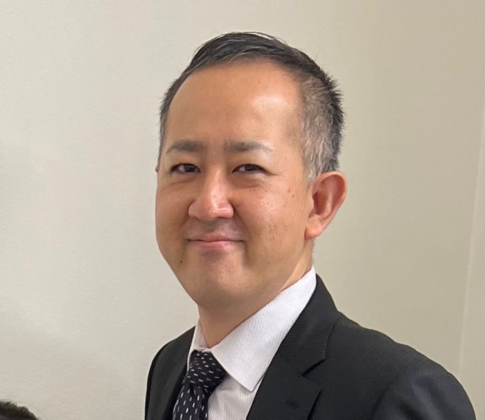

札幌・北海道の企業向け健康経営サポート
従業員の腰痛・転倒・ケガを予防し、長く安全に働ける職場づくりを支援します
理学療法士が、従業員の身体機能・作業動作・職場環境を評価し、腰痛・転倒・労災リスクの予防を支援します。
プライズネス健康経営サポートは、札幌市を中心に、北海道内の企業・事業所を対象として、従業員の腰痛・転倒・ケガ予防、労災リスクの低減、健康経営の取り組みを支援しています。
- 専門性
- 理学療法士の視点
- 対象
- 企業・従業員
- 目的
- 予防と職場づくり

こんなお悩みはありませんか？
身体の不調や安全面の不安を、会社全体の課題として整理します。
労働災害データと健康経営
厚生労働省データから見る、企業の転倒予防・腰痛対策と健康経営
札幌・北海道の企業に向けて、理学療法士が職場の労災予防と休業リスク対策を支援します。
過去最少
前年と比べてほぼ横ばい
身体機能と職場環境の両面から対策
厚生労働省が公表した令和7年の労働災害発生状況では、死亡者数は700人と過去最少となりました。一方で、休業4日以上の死傷者数は135,333人で、前年と比べてほぼ横ばいの状況です。
特に多い事故の型は「転倒」37,195人、腰痛などの「動作の反動・無理な動作」22,166人、「墜落・転落」20,864人とされています。
転倒や腰痛は、単なる不注意だけでなく、筋力低下、バランス能力の低下、柔軟性の低下、疲労の蓄積、作業姿勢や身体の使い方の癖が関係していることもあります。
札幌の健康経営、企業の転倒予防、職場の腰痛対策、労災予防、休業リスク対策では、理学療法士による評価を通じて、身体機能と作業動作、職場環境をあわせて確認する視点が重要です。
プライズネス健康経営サポートでは、理学療法士が姿勢・筋力・バランス・動作を確認し、職場環境や作業動作とあわせて、腰痛・転倒・休業リスクの予防を支援します。
詳しく記事を読むプライズネスの支援方法
身体機能と職場動作の両面から、リスクを見える化します。
医療行為や治療ではなく、従業員が安全に働き続けられる職場づくりを支援する法人向けサービスです。札幌 健康経営 サポート、北海道 健康経営 支援、札幌 労災予防に関するご相談に対応します。
見る
職場動作、姿勢、環境、作業導線を確認します。
測る
身体機能チェックや腰痛・転倒リスク評価を行います。
整える
運動指導、職場改善提案、健康セミナーにつなげます。
サービス内容
現場に合わせて、必要な支援を組み合わせます。

職場動作の確認
介助、運搬、立ち作業、デスクワークなどの姿勢や動作を確認します。

身体機能チェック
筋力、柔軟性、バランス、歩行など、働くうえで必要な機能を確認します。

健康セミナー
腰痛予防、転倒予防、疲労対策、姿勢改善などをテーマに実施します。
職場の健康リスク簡易チェック
30項目のチェックは専用ページで確認できます。
腰痛・転倒・労災リスクにつながりやすい職場の状態を、3分程度で簡易確認できます。結果は診断ではなく、相談や職場改善を始めるための目安です。
今すぐチェックする
料金プラン
まずは小さく始めて、必要に応じて継続支援へ。
単発セミナー
55,000円〜腰痛予防、転倒予防、姿勢改善などをテーマに実施します。
職場訪問評価
132,000円〜作業現場を確認し、身体負担や環境面のリスクを整理します。
定期サポート
月額88,000円〜訪問、評価、改善提案、セミナーを組み合わせて支援します。
補助金について
令和8年度エイジフレンドリー補助金の活用相談にも対応
高年齢労働者の転倒・腰痛・身体的負担の予防に取り組む中小企業では、令和8年度エイジフレンドリー補助金を活用できる可能性があります。
令和8年度版では、60歳以上の高年齢労働者が安全に働くことができる環境整備を目的として、専門家によるリスクアセスメント、職場環境改善、転倒防止・腰痛予防のための身体機能チェックや運動指導等の取組が示されています。
プライズネス健康経営サポートでは、理学療法士の視点で、職場の作業動作・身体機能・職場環境を確認し、腰痛・転倒・労働災害予防に向けた取り組みの整理をサポートします。
補助金の対象可否は、事業内容・対象経費・申請内容・審査結果により異なります。補助金の交付を保証するものではありませんので、申請をご検討の場合は最新の公募要領・Q&Aをご確認ください。
60歳以上
役員を除き、自社の労災保険適用の60歳以上の労働者が常時1名以上就労していること
対象事業者
1年以上事業を実施している中小企業事業者が対象とされています。
転倒防止・腰痛予防
身体機能チェックや運動指導等は、補助率1/2、上限額100万円の対象となる可能性があります。
職場環境改善
専門家によるリスクアセスメント、職場環境改善、運動指導などの取組整理を支援します。
- 申請期間
- 令和8年5月20日〜10月31日
- 専門家総合対策コース第1段階の申請期限
- 8月31日
公式資料
公式リーフレット・Q&Aはこちら
補助金の対象可否、申請要件、対象経費、申請期間、必要書類などは、年度ごとの公式リーフレット・Q&Aでご確認ください。プライズネスでは、職場の腰痛・転倒予防に向けた取り組み内容の整理をサポートします。

※本ページは制度の概要を紹介するものであり、補助金の採択・交付を保証するものではありません。
※補助金の対象可否、申請要件、対象経費は年度・事業内容・審査結果により異なります。
※申請前に、必ず公式の公募要領・Q&Aをご確認ください。

代表メッセージ
従業員の不調を、本人だけの問題で終わらせない。
私たちは、従業員の身体不調やケガを「本人の問題」だけで終わらせず、職場環境や作業動作、身体機能の両面から確認することが重要だと考えています。
理学療法士の専門的な視点で、従業員が長く安全に働き続けられる職場づくりを支援します。
成田 悟志
理学療法士／株式会社プライズライフ 代表
医療機関での臨床経験をもとに、リハビリジムプライズネスを運営。従業員の身体機能、作業動作、職場環境を総合的に確認し、腰痛・転倒・ケガ予防に向けた健康経営サポートを行っています。
お問い合わせ
無料相談・資料請求・訪問相談のご相談はこちら。
企業規模、職種、現在の課題に合わせて、導入しやすい形をご提案します。まずは「何から始めるべきか」の整理からご相談ください。